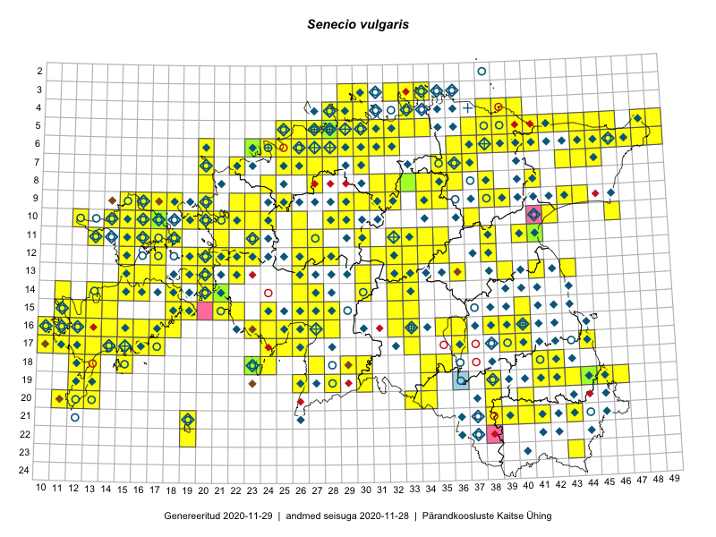

Senecio vulgaris
Uuendatud: 2016-12-01
Kaardile koondatud taksonid: Senecio vulgaris L.

Kaart põhineb 292 kirjel, neist vaatlusi 291 ja eksemplare 1.
Kuvatud viited 20 esimesele andmebaasikirjele, ülejäänud PlutoFis
- Peedu Saar, Timo Luhamäe: 2015-05-10: 12-32: ala
- Peedu Saar, Timo Luhamäe: 2015-05-12: 07-35: ala
- Peedu Saar, Timo Luhamäe: 2015-05-13: 06-40: ala
- Peedu Saar: 2015-05-14: 10-42: ala
- Toomas Kukk, Eerik Leibak: 2015-08-09: 13-15: ala
- Thea Kull: 2015-07-07: 16-40: ala
- Peedu Saar, Liina Oja: 2015-05-21: 16-24: ala
- Peedu Saar, Toomas Kukk: 2015-05-27: 09-16: ala
- Toomas Kukk, Eerik Leibak: 2015-08-10: 13-15: ala
- Peedu Saar, Toomas Kukk: 2015-05-26: 10-16: ala
- Tiit Hallikma, Toomas Kukk: 2015-07-21: 05-45: ala
- Toomas Kukk, Indrek Tammekänd: 2015-05-10: 12-33: ala
- Toomas Kukk, Raivo Kalle: 2015-05-12: 11-40: ala
- Ott Luuk: 2014-07-27: 12-20: GPS punkt
- Ott Luuk: 2014-07-25: 12-19: GPS punkt
- Ott Luuk: 2014-07-24: 12-20: ala
- Ott Luuk, Peedu Saar: 2015-07-27: 11-35: ala
- Peedu Saar, Elle Roosaluste: 2015-07-12: 13-20: ala
- Tiit Hallikma, Toomas Kukk: 2015-07-22: 05-49: ala
- Ott Luuk, Peedu Saar: 2015-08-12: 23-43: ala